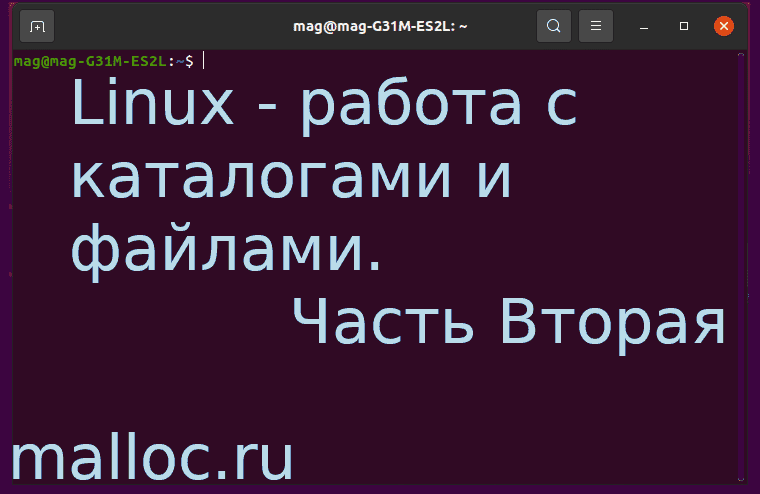

<!DOCTYPE html><html/><title>Linux - работа с каталогами и файлами. Часть Вторая</title><meta http-equiv="content-type" content="text/html; charset=utf-8"/><meta name="description" content="Подробнее..."/><meta name="viewport" content="width=device-width, initial-scale=1"/><link rel="stylesheet" href="../css/style.css"/><link rel="stylesheet" href="https://cdnjs.cloudflare.com/ajax/libs/font-awesome/4.7.0/css/font-awesome.min.css"/><script>document.oncontextmenu = cmenu; function cmenu(){ return false; }</script><!-- Body --><body lang="ru-RU" class="malloc-post"/><noscript/></noscript><!-- Navbar --><nav class="malloc-top malloc-bar malloc-theme malloc-left-align malloc-large malloc-card"/><a href="../index.html" class="malloc-bar-item malloc-button malloc-hover-white" style="font-size: 14px;"/>главная</a><a href="../articles-1.html" class="malloc-bar-item malloc-button malloc-hover-white" style="font-size: 14px;"/>статьи</a><a href="../about.html" class="malloc-bar-item malloc-button malloc-hover-white" style="font-size: 14px;"/>донат</a></nav><!-- Main content: shift it to the right by 210-275 pixels when the sidebar is visible --><div class="malloc-main malloc-auto" style="margin-left:150px"/><!-- main{ --><div class="malloc-row malloc-padding-64"/><!-- text{ --><!-- Статья --><div class="malloc-threequarter malloc-padding"/><!-- { --><h1 class="malloc-center malloc-theme-main malloc-card malloc-auto malloc-cursive" style="border-radius:5px;">Linux - работа с каталогами и файлами. Часть Вторая</h1><!-- Вступление --><p style="font-size: 14px" class="malloc-padding-small"/>В статье описаны следующие темы: автодописывание имен, история команд, список задач, права доступа к файлам, документация.<br/>Темы всем извесны, но все же должен о них рассказать.<br/>Данная статья вытекает из предыдущей статьи, поэтому рекомендую ознакомиться и с <a id="article-3" class="malloc-hover-blue" style="border-radius:5px; text-decoration:underline;"/>"Первой частью"</a>. <br/><br/>Так же в статье присутствуют видео, в которых все показано на практике.</p><div class="malloc-auto" style="margin-top:40px; width:80.99999%; hight:80.99999%"/></div><!-- Подзаголовок 1 --><p class="malloc-padding-small"/><div class="malloc-padding-16"/></div><h2 class="malloc-text-teal">Автодописывание имен файлов</h2><ul class="malloc-ul"/><div class="malloc-padding-small"/><li/>Командные интерпретаторы умеют дописывать имена файлов. Эта возможность задействеутся нажатием клавиши "Tab"<br/>Начав писать имя файла (команды, каталога), мы можем нажать "Tab", и если на диске есть один файл, имя которого начинается с букв уже введенных нами, то его имя интерпретатор допишет за нас.<br/><br/>Если же подходящих файлов больше одного, при нажатии на клавищу "Tab" ничего видимого не произойдет, но вы можете тут же нажать на неё второй раз, и интерпретатор выдаст нам полный список файлов, подходящих к нашему случаю.<br/><br/>В целом эта возможность способна сэкономить нам больше половины нажатий на клавиши.</li></div></ul></p><!-- Видео 1 --><div alt="Video-desktop" class="malloc-ad-desktop malloc-center"/><!-- для ПК --><object style="width:560px; height:315px;" data="https://www.youtube.com/embed/h_URggViths" frameborder="0" allow="accelerometer; autoplay; clipboard-write; encrypted-media; gyroscope; picture-in-picture" allowfullscreen="allowfullscreen"></object></div><div alt="Video-mobile" class="malloc-ad-mobile malloc-center"/><!-- для мобильников --><object style="width:250px; height:180px;" data="https://www.youtube.com/embed/h_URggViths" frameborder="0" allow="accelerometer; autoplay; clipboard-write; encrypted-media; gyroscope; picture-in-picture" allowfullscreen="allowfullscreen"></object></div><hr/><!-- Подзаголовок 2 --><p class="malloc-padding-small"/><h2 class="malloc-text-teal">История команд</h2><ul class="malloc-ul"/><div class="malloc-padding-small"/><li/>Интерпретатор помнит историю введенных нами команд, причем при завершении сеанса работы он эту историю сохроняет в специальном файле, так что вы можете воспользоваться своими командами при следующем включении компьютера.<br/><br/>Просмотреть историю можно командой "history":<br/><code class="malloc-text-teal malloc-border malloc-bar-item"/>history</code><br/><br/>Эту команду удобно использовать с "less":<br/><code class="malloc-text-teal malloc-border malloc-bar-item"/>history | less</code><br/><br/>Можно перенаправить поток в файл:<br/><code class="malloc-text-teal malloc-border malloc-bar-item"/>history > history.txt</code><br/>Открыв файл, вы увидете историю команд.<p class="malloc-padding-small malloc-cursive malloc-border malloc-theme-l5" style="font-size:14px"/>"history" - библиотека истории GNU<br/>"less" - испльзуется для просмотра </p></li><li/>Каждая введенная нами команда стоит под номером, поэтому мы можем повторить любую команду из старых команд, зная её номер, используя восклицательный знак:<br/><code class="malloc-text-teal malloc-border malloc-bar-item"/>!234</code><br/><br/>Два восклицательных знака обозначают последнюю введенную команду:<br/><code class="malloc-text-teal malloc-border malloc-bar-item"/>!!</code></li></div></ul></p><!-- Видео 1 --><div alt="Video-desktop" class="malloc-ad-desktop malloc-center"/><!-- для ПК --><object style="width:560px; height:315px;" data="https://www.youtube.com/embed/b7SWzkufEio" frameborder="0" allow="accelerometer; autoplay; clipboard-write; encrypted-media; gyroscope; picture-in-picture" allowfullscreen="allowfullscreen"></object></div><div alt="Video-mobile" class="malloc-ad-mobile malloc-center"/><!-- для мобильников --><object style="width:250px; height:180px;" data="https://www.youtube.com/embed/b7SWzkufEio" frameborder="0" allow="accelerometer; autoplay; clipboard-write; encrypted-media; gyroscope; picture-in-picture" allowfullscreen="allowfullscreen"></object></div><hr/><!-- Подзаголовок 3 --><p class="malloc-padding-small"/><h2 class="malloc-text-teal">Список задач</h2><ul class="malloc-ul"/><div class="malloc-padding-small"/><li/>Увидеть список процессов, выполняющиеся в настоящий момент и их текущие номера, можно посмотреть при помощи "ps":<br/><code class="malloc-text-teal malloc-border malloc-bar-item"/>ps</code><br/><p class="malloc-padding-small malloc-cursive malloc-border malloc-theme-l5" style="font-size:14px"/>"ps ax" - выдаст список всех существующих процессов<br/>"ps axu" - выдаст список всех существующих процессов и их владельцев</p></li><li/>Бывает, что процесс завис. И обычными способами закрыть его не получается.<br/>На помощь придет команда "kill -9", после которой, нужно вписать номер процесса.<br/><br/>Для поиска зависшей программы введем команду "pidof" и далее название зависшей программы:<br/><code class="malloc-text-teal malloc-border malloc-bar-item"/>pidof vlc</code><br/>Будет выдан номер процесса.<br/>И далее с помощью "kill -9" уничтожаем процесс.<br/><code class="malloc-text-teal malloc-border malloc-bar-item"/>kill -9 2142</code><br/><br/>Зависшую программу можно завершить и так:<br/><code class="malloc-text-teal malloc-border malloc-bar-item"/>killall vlc</code><br/><p class="malloc-padding-small malloc-cursive malloc-border malloc-theme-l5" style="font-size:14px"/>"kill -KILL" - эвквивалент "kill -9"<br/>"killall" - убить все процессы по имени программы</p></li></div></ul></p><!-- Видео 1 --><div alt="Video-desktop" class="malloc-ad-desktop malloc-center"/><!-- для ПК --><object style="width:560px; height:315px;" data="https://www.youtube.com/embed/Q7q-WS60j9M" frameborder="0" allow="accelerometer; autoplay; clipboard-write; encrypted-media; gyroscope; picture-in-picture" allowfullscreen="allowfullscreen"></object></div><div alt="Video-mobile" class="malloc-ad-mobile malloc-center"/><!-- для мобильников --><object style="width:250px; height:180px;" data="https://www.youtube.com/embed/Q7q-WS60j9M" frameborder="0" allow="accelerometer; autoplay; clipboard-write; encrypted-media; gyroscope; picture-in-picture" allowfullscreen="allowfullscreen"></object></div><hr/><!-- Подзаголовок 4 --><p class="malloc-padding-small"/><h2 class="malloc-text-teal">Права доступа к файлам</h2><ul class="malloc-ul"/><div class="malloc-padding-small"/><li/>Чтобы узнать права доступа к файлу можно воспользоваться "ls" с флагом "-l", после ввести нужный файл или каталог:<br/><code class="malloc-text-teal malloc-border malloc-bar-item"/>ls -l file</code><br/>Слева мы увидим, что то вроде - "-rw-rw-r--", "-rwxrwxrwx", "drwxr-xr-x".<br/>Эта группа символов показывает тип файла.<br/><p class="malloc-padding-small malloc-cursive malloc-border malloc-theme-l5" style="font-size:14px"/>"ls" - список содержимого каталога<br/>"-l" - использовать формат длинного списка.<br/>"-" - в начале означает обычный файл<br/>"d" - в начале означает каталог<br/>"r" - чтение<br/>"w" - запись<br/>"x" - исполнение</p></li><li/>Так как группа из трех бит соответствует ровно одной цифре восмиричной системы счисления, общепринятой является практика записи слова, прав доступа к файлу/каталогу, в виде восьмиричного числа, обычно трехзначного (644).<br/><br/>Обычно первая цифра, означает права для владельца - user.<br/>Вторая, права для группы - group.<br/>Третья, права для всех остальных пользователей - other.<p class="malloc-padding-small malloc-cursive malloc-border malloc-theme-l5" style="font-size:14px"/>"1" - исполнение<br/>"2" - запись<br/>"3" - запись + исполнение<br/>"4" - чтение<br/>"5" - чтение + исполнение<br/>"6" - чтение + запись<br/>"0" - все запрещено<br/>"7" - все разрешено</p></li><li/>Изменим права доступа при помощи "chmod":<br/><code class="malloc-text-teal malloc-border malloc-bar-item"/>chmod -700 file</code><br/>Теперь этот файл может читать, записывать, испольнять только владелец файла.<br/><br/><code class="malloc-text-teal malloc-border malloc-bar-item"/>chmod -644 file</code><br/>"user" чтение и запись, "group" и "other" только чтение.<br/><br/><code class="malloc-text-teal malloc-border malloc-bar-item"/>chmod +x file</code><br/>Права на исполнение для всех.<p class="malloc-padding-small malloc-cursive malloc-border malloc-theme-l5" style="font-size:14px"/>"chmod" - изменить биты режима файла<br/>"+" - Дать права всем. Например на исполнение "+x"<br/>"-" - Забрать права у всех. Например на исполнение "-x" </p></li><li/>Для каталогов интерпритация битов прав доступа несколько отличается:<br/>- права на чтение каталога дают возможность просмотреть его содержимое.<br/>- права на запись позволяют создавать и уничтожать в нем файлы.<br/>- права на исполнение дает возможность каким-либо образом использовать содержимое каталога, в том числе, например, открывать файлы, находящие в каталоге.<br/><br/>Если на каталог установлены права чтения, но нет прав исполнения, мы можем его посмотреть, но воспользоваться увиденным нам не удасться.<br/><br/>Если есть права на исполнение, но нету прав на чтение, мы можем открыть файл из этого каталога только в том случае, если точно знаем имя файла.<br/>Узнать имя файла не можем, так как нету возможности просмотреть каталог.</li><li/>Эта команда устанавливает в нашем домашнем каталоге и всех её подкаталогах для всех файлов права для владельца на чтение и запись:<br/><code class="malloc-text-teal malloc-border malloc-bar-item"/>chmod -R u+rwX,go=rX ~</code><br/><br/>Для каталогов, а также файлов, для которых исполнение разрешено хоть кому-то, владельцу назначается также права на исполнение.<br/>Для "group" и "other" устанавливаются права на чтение, для исполняемых файлов и каталогов, также права на исполнение, а все остальные права убираются. <p class="malloc-padding-small malloc-cursive malloc-border malloc-theme-l5" style="font-size:14px"/>"R" - смена прав доступа ко всем файлам во всех подкаталоках заданного каталога.<br/>"X" - установка/снятие бита исполнениятолько для каталогов, также для тех файлов, на которые хотя бы у кого-нибудь есть права исполнения.</p></li></div></ul></p><!-- Видео 1 --><div alt="Video-desktop" class="malloc-ad-desktop malloc-center"/><!-- для ПК --><object style="width:560px; height:315px;" data="https://www.youtube.com/embed/gkOWeY0tV0A" frameborder="0" allow="accelerometer; autoplay; clipboard-write; encrypted-media; gyroscope; picture-in-picture" allowfullscreen="allowfullscreen"></object></div><div alt="Video-mobile" class="malloc-ad-mobile malloc-center"/><!-- для мобильников --><object style="width:250px; height:180px;" data="https://www.youtube.com/embed/gkOWeY0tV0A" frameborder="0" allow="accelerometer; autoplay; clipboard-write; encrypted-media; gyroscope; picture-in-picture" allowfullscreen="allowfullscreen"></object></div><hr/><!-- Подзаголовок 5 --><p class="malloc-padding-small"/><h2 class="malloc-text-teal">Документация</h2><ul class="malloc-ul"/><div class="malloc-padding-small"/><div class="malloc-text-blue" style="font-size:18px;"/>man</div><li/>Ручной пейджер системы.<br/>Каждый аргумент передаваемый в man, обычно является именем программы, утилитой или функцией:<br/><code class="malloc-text-teal malloc-border malloc-bar-item"/>man remove</code><br/>Мы увидим документацию по "remove".<br/><br/>Для просмотра, можно использовать "more" или "less":<br/> <code class="malloc-text-teal malloc-border malloc-bar-item"/>man remove | more</code><br/>Или "less".<br/> <code class="malloc-text-teal malloc-border malloc-bar-item"/>man remove | less</code><br/><p class="malloc-padding-small malloc-cursive malloc-border malloc-theme-l5" style="font-size:14px"/>"man" - интерфейс к системным справочным руководствам<br/>"more" - это фильтр для постраничного просмотра текста по одному экрану за раз<br/></p></li><li/>Иногда мы хотим узнать о конкретной функции, а "man" находит совсем не то, что искали.<br/>Дело в том, что есть несколько разделов и поиск проиходит по всем этим разделам:<br/> <code class="malloc-text-teal malloc-border malloc-bar-item"/>man time.1</code><br/> <code class="malloc-text-teal malloc-border malloc-bar-item"/>man time.2</code><br/> <code class="malloc-text-teal malloc-border malloc-bar-item"/>man time.3</code><br/> <code class="malloc-text-teal malloc-border malloc-bar-item"/>man time.7</code><br/><br/>Но по умолчанию, будет выведено отображение только первой найденной страницы, даже, если страница есть в нескольких разделах:<br/> <code class="malloc-text-teal malloc-border malloc-bar-item"/>man time</code><br/><br/>Подробнее о "man" можно узнать здесь:<br/> <code class="malloc-text-teal malloc-border malloc-bar-item"/>man man</code><br/><br/><p class="malloc-padding-small malloc-cursive malloc-border malloc-theme-l5" style="font-size:14px"/>"1" - исполняемые программы или команды оболочки<br/>"2" - системные вызовы (функции, предоставляемые ядром)<br/>"3" - библиотечные вызовы (функции в программных библиотеках)<br/>"4" - специальных файла (обычно находятся в /dev)<br/>"5" - форматы файлов и соглашения, например /etc/passwd<br/>"6" - игры<br/>"7" - разное (включая пакеты макросов и соглашения), например man.7, 'groff(7)'.<br/>"8" - команды системного администрирования (обычно только для root).<br/>"9" - подпрограммы ядра [нестандартные].</p></li><div class="malloc-text-blue" style="font-size:18px;"/>info</div><li/>Позволяет просматривать страницы, связанных между собой гиперссылками.<br/>То есть, документы в формате "info" представляют собой гипертекст, а сама команда это браузер гипертекста, работающий в текстовом режиме:<br/> <code class="malloc-text-teal malloc-border malloc-bar-item"/>info time | less</code><br/><br/></li><div class="malloc-text-blue" style="font-size:18px;"/>help</div><li/>Отображает краткую сводку встроенных команд.<br/>Если указан шаблон, выдает подробную справку по всем командам, соответствующим шаблону, в противном случае распечатывается список разделов справки.<br/>Посмотрим на "cd":<br/> <code class="malloc-text-teal malloc-border malloc-bar-item"/>help cd | less</code><br/>Или так:<br/> <code class="malloc-text-teal malloc-border malloc-bar-item"/>cd --help | less</code><br/><br/>Узнать о "help", можно так:<br/> <code class="malloc-text-teal malloc-border malloc-bar-item"/>help --help</code><br/></li></div></ul></p><!-- Видео 1 --><div alt="Video-desktop" class="malloc-ad-desktop malloc-center"/><!-- для ПК --><object style="width:560px; height:315px;" data="https://www.youtube.com/embed/iay_omsX8uM " frameborder="0" allow="accelerometer; autoplay; clipboard-write; encrypted-media; gyroscope; picture-in-picture" allowfullscreen="allowfullscreen"></object></div><div alt="Video-mobile" class="malloc-ad-mobile malloc-center"/><!-- для мобильников --><object style="width:250px; height:180px;" data="https://www.youtube.com/embed/iay_omsX8uM " frameborder="0" allow="accelerometer; autoplay; clipboard-write; encrypted-media; gyroscope; picture-in-picture" allowfullscreen="allowfullscreen"></object></div><hr/><!-- Заключение --><p class="malloc-padding-small"/><h2 class="malloc-text-teal">Заключение</h2><ul class="malloc-ul"/><div class="malloc-padding-small"/><li/>Пользуйтесь фундаментальной информацией и будет Вам счастье!<br/>Подробную информацию о всех командах, вызовах, форматах и т.д. можно посмотреть <a id="Man" class="malloc-hover-grey" style="border-radius:5px; text-decoration:underline;"/>здесь</a><br/><br/>Надеюсь, статья была полезной и у вас получилось найти ответы на свои вопросы.</li></div></ul></p><div class="malloc-text-green malloc-padding-12" title="Спасибо за статью"/><!-- для ПК --><object title="На книги" class="malloc-ad-desktop" data="https://yoomoney.ru/quickpay/shop-widget?writer=seller&targets=%D0%9D%D0%B0%20%D0%BC%D0%B5%D1%87%D1%82%D1%83&targets-hint=&default-sum=49&button-text=12&payment-type-choice=on&mobile-payment-type-choice=on&hint=%D0%94%D0%B5%D1%80%D0%B6%D0%B8%20%D0%BD%D0%B0%20%D0%B1%D1%83%D0%BC%D0%B0%D0%B3%D1%83%20%D0%B8%D0%BB%D0%B8%20%D0%9E%D1%82%20%D1%87%D0%B8%D1%81%D1%82%D0%BE%D0%B3%D0%BE%20%D1%81%D0%B5%D1%80%D0%B4%D1%86%D0%B0&successURL=&quickpay=shop&account=410015474057891" width="500" height="221" allowtransparency="true" scrolling="no"/></object></div><div class="malloc-text-green malloc-padding-12 malloc-center" title="Спасибо за статью"/><!-- для мобильников --><object title="На книги" class="malloc-ad-mobile" data="https://yoomoney.ru/quickpay/shop-widget?writer=seller&targets=%D0%9D%D0%B0%20%D0%BC%D0%B5%D1%87%D1%82%D1%83&targets-hint=&default-sum=49&button-text=12&payment-type-choice=on&mobile-payment-type-choice=on&hint=%D0%94%D0%B5%D1%80%D0%B6%D0%B8%20%D0%BD%D0%B0%20%D0%B1%D1%83%D0%BC%D0%B0%D0%B3%D1%83%20%D0%B8%D0%BB%D0%B8%20%D0%9E%D1%82%20%D1%87%D0%B8%D1%81%D1%82%D0%BE%D0%B3%D0%BE%20%D1%81%D0%B5%D1%80%D0%B4%D1%86%D0%B0&successURL=&quickpay=shop&account=410015474057891" width="230" height="250" allowtransparency="true" scrolling="no"/></object></div></div><!-- } --><!-- Правый сайдбар { --><div class="malloc-quarter malloc-text-gray malloc-padding-16 malloc-card" title="Новости" style="margin-top:90px"/><div class="malloc-container malloc-text-grey" style="border-radius:5px;"/><div class="malloc-center"/>НОВОСТИ</div><div class="malloc-container malloc-theme-l1 malloc-padding-large" style="font-size: 14px" id="news"/></div></div><div class="malloc-center malloc-padding-16"/><div style="display:inline-block; font-size:12px; border-radius:5px;" class="malloc-padding-small malloc-theme-clock"/><div id="mytime" style="display:inline-block; margin-right: 5px" title="Время"/></div>|<div id="mydate" style="display:inline-block; margin-left: 1px" title="Дата"/></div></div></div></div><!-- } Правый сайдбар --><div class="malloc-center" id="AD-payeer" target="_blank"></div></div><!--/ текст --></div><!--/ main --><!----><!-- Footer --><div class="malloc-padding-64 malloc-ad-mobile"/><div class="malloc-padding-64 malloc-ad-mobile"/></div><div class="malloc-padding-32 malloc-ad-mobile"/></div></div><div class="malloc-padding-64 malloc-ad-desktop"/></div><footer/><div class="malloc-threequarter"/><div class="malloc-container malloc-theme-l4 malloc-padding-large malloc-ad-desktop" style="font-size:12px; margin-left:270px; border-radius:5px;"/><!-- Ссылки --><ul class="malloc-ul malloc-col"/><b/>Донат:</b><div class="malloc-padding-12"/><div id="Donat-footer" class="malloc-hover-red" style="border-radius:5px;"/>На книги</div><div id="Dream-footer" class="malloc-hover-red" style="border-radius:5px;"/>На мечту</div><div id="Question-footer" class="malloc-hover-red" style="border-radius:5px;"/>Звдать вопрос</div></div></ul><!-- Соц. сети --><ul class="malloc-ul malloc-col"/><b/>Каналы:</b><div class="malloc-padding-12"/><div id="Telegram-footer" class="malloc-hover-green" style="border-radius:5px;"/>Телеграм</div><div id="Youtube-footer" class="malloc-hover-green" style="border-radius:5px;"/>Youtube</div></div></ul><!-- Допольнительно --><ul class="malloc-ul malloc-col"/><b/>Дополнительно:</b><div class="malloc-padding-12"/><div id="Topmail-footer" class="malloc-hover-white" style="border-radius:5px;"/>Рейтинг сайта</div><div id="Payeer-footer" class="malloc-hover-white" style="border-radius:5px;"/>Payeer</div></div></ul></div><!-- Copyright desktop--><div class="malloc-container malloc-theme-l5 malloc-card malloc-ad-desktop" style="margin-left:270px; border-radius:5px;"/><h6 class="malloc-center" title="Все права защищены">&copy; malloc.ru, 2021</h6></div><!-- Copyright --><div class="malloc-container malloc-theme-l2 malloc-card-4 malloc-ad-mobile" style="border-radius:5px;"/><h6 class="malloc-center" title="Все права защищены">&copy; malloc.ru, 2021</h6></div></div></footer><!--JScript --><script src="js/4_scripts.js"/></script><script src="../js/news.js"/></script></body></html>
